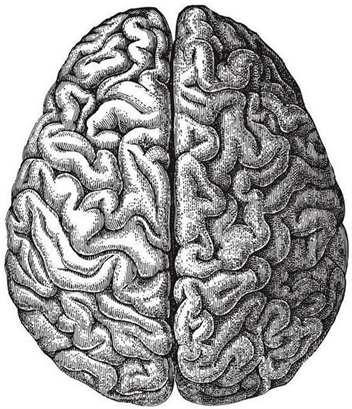

^
toxic O manie
"Au début, la drogue te rend euphorique. C'est comme gagner un championnat. Tu te dis : demain, je m'en fous vu qu'aujourd'hui, j'ai remporté le championnat." Diego MARADONA
TOXIC : Qui agit comme un poison.
ô : interjection. qui marque l'admiration, l'étonnement, la joie, la douleur, etc. Particule servant à apostropher, invoquer, l’exaltation d’un sentiment.
MANIE : folie partielle, dans laquelle, l'imagination est frappée d'une idée fixe. Habitude bizarre, ridicule ; fantaisie, goût porté à l'extrême.
Une articulation orthrographique surprenante, n'est-ce-pas ?
Pourtant pour l'usager, il peut se voir une forme de divination dans ce rapport à la toxicité. Derrière cet empoisonnement cérébral, entendez que la toxicomanie est avant tout une affaire chimique.
Notre cerveau ne supporte que difficilement la contrainte émotionnelle, la frustration, la souffrance de la pensée et tout cela est avant toute sensation, toute perception, toute compréhension, chimique. Alors, ce dernier cherche à trouver divers subterfuges moléculaires pour palier l'entrave psychique. La consommation toxicomaniaque, tous procédés confondus, finit cérébralement en al-chimie : dopamine, endorphine, canabinoïde, sérotonine, noradrénaline, gaba, etc. C'est une quête éperdue vers la sensation de plaisir, l'évitement de la situation de déplaisir et d'un confort intérieur factice.
Les substances psychoactives les plus courantes peuvent être réparties en psycholeptiques (action de sédation : alcool, solvants volatiles, héroïne, morphine, etc.), psychoanaleptiques (action de stimulation : nicotine, cocaïne, amphétamines, ecstasy, etc.) et psychodysleptiques (perturbation de l’activité psychique : hallucinogènes, PCP, LSD, cannabis, etc.).
L’ensemble des substances psychoactives modifient en profondeur les équilibres entre les différentes voies de neurotransmission, ce qui perturbe le circuit de la récompense, et secondairement l’ensemble des processus motivationnels. Le déséquilibre neurochimique, quant il se prolonge va aboutir à la re-création de nouvelles voies neuronales avec un shunt cortical (c'est-à-dire que les processus de pensée complexe sont shuntés au détriment de voies plus archaïques de satisfaction pulsionnelles immédiates). L’empreinte biologique laissée par la répétition de l’intoxication engendre ainsi l’apparition progressive de la dépendance, qui est un phénomène, répétons-le, à l’interface du soma et de la psyché.
Les toxicomanies peuvent être le manifeste d'une psychopathologie comme un trouble de la personnalité préexistante, un trouble de l'humeur ou de l'adaptation ou encore représenter un trouble réactionnel au mode de vie imposé par celles-ci ou être à l’intrication de ces sources de souffrance psychique. Pour ne citer qu'eux, vous comprenez ici que la nicotine, l'alcool, le cannabis, la cocaîne, mais également le sexe, le travail, le sport ou encore le sucre ne sont que des influenceurs exogènes de ces processus neurochimiques internes et de leurs intentions : distancer, apaiser, diluer, tamponner... Et pour tamponner quoi ? un mal être, un mal dire, une perte, un manque, un vide, un défaut d'expresivité, une plaie morale ? Le toxicomane oublie bien souvent la genèse de sa captivité face à sa consommation, égaré par la ritualisation, le manque, la tolérance et l'habituation.
Et les toxicophiles le savent bien, lorsque leur produit de prédilection vient à manquer, ils ont recours à une stratégie de substitution par d’autres substances. C'est comme un besoin de prolonger physiquement un lien perdu, insécure ou en tout cas insatisfaisant. Il y aurait ainsi une pathologie du lien dont souffrent potentiellement les usagés et qu’ils semblent exprimer de façon si différente et parfois même totalement opposée.
ô : interjection. qui marque l'admiration, l'étonnement, la joie, la douleur, etc. Particule servant à apostropher, invoquer, l’exaltation d’un sentiment.
MANIE : folie partielle, dans laquelle, l'imagination est frappée d'une idée fixe. Habitude bizarre, ridicule ; fantaisie, goût porté à l'extrême.
Une articulation orthrographique surprenante, n'est-ce-pas ?
Pourtant pour l'usager, il peut se voir une forme de divination dans ce rapport à la toxicité. Derrière cet empoisonnement cérébral, entendez que la toxicomanie est avant tout une affaire chimique.
Notre cerveau ne supporte que difficilement la contrainte émotionnelle, la frustration, la souffrance de la pensée et tout cela est avant toute sensation, toute perception, toute compréhension, chimique. Alors, ce dernier cherche à trouver divers subterfuges moléculaires pour palier l'entrave psychique. La consommation toxicomaniaque, tous procédés confondus, finit cérébralement en al-chimie : dopamine, endorphine, canabinoïde, sérotonine, noradrénaline, gaba, etc. C'est une quête éperdue vers la sensation de plaisir, l'évitement de la situation de déplaisir et d'un confort intérieur factice.
Les substances psychoactives les plus courantes peuvent être réparties en psycholeptiques (action de sédation : alcool, solvants volatiles, héroïne, morphine, etc.), psychoanaleptiques (action de stimulation : nicotine, cocaïne, amphétamines, ecstasy, etc.) et psychodysleptiques (perturbation de l’activité psychique : hallucinogènes, PCP, LSD, cannabis, etc.).
L’ensemble des substances psychoactives modifient en profondeur les équilibres entre les différentes voies de neurotransmission, ce qui perturbe le circuit de la récompense, et secondairement l’ensemble des processus motivationnels. Le déséquilibre neurochimique, quant il se prolonge va aboutir à la re-création de nouvelles voies neuronales avec un shunt cortical (c'est-à-dire que les processus de pensée complexe sont shuntés au détriment de voies plus archaïques de satisfaction pulsionnelles immédiates). L’empreinte biologique laissée par la répétition de l’intoxication engendre ainsi l’apparition progressive de la dépendance, qui est un phénomène, répétons-le, à l’interface du soma et de la psyché.
Les toxicomanies peuvent être le manifeste d'une psychopathologie comme un trouble de la personnalité préexistante, un trouble de l'humeur ou de l'adaptation ou encore représenter un trouble réactionnel au mode de vie imposé par celles-ci ou être à l’intrication de ces sources de souffrance psychique. Pour ne citer qu'eux, vous comprenez ici que la nicotine, l'alcool, le cannabis, la cocaîne, mais également le sexe, le travail, le sport ou encore le sucre ne sont que des influenceurs exogènes de ces processus neurochimiques internes et de leurs intentions : distancer, apaiser, diluer, tamponner... Et pour tamponner quoi ? un mal être, un mal dire, une perte, un manque, un vide, un défaut d'expresivité, une plaie morale ? Le toxicomane oublie bien souvent la genèse de sa captivité face à sa consommation, égaré par la ritualisation, le manque, la tolérance et l'habituation.
Et les toxicophiles le savent bien, lorsque leur produit de prédilection vient à manquer, ils ont recours à une stratégie de substitution par d’autres substances. C'est comme un besoin de prolonger physiquement un lien perdu, insécure ou en tout cas insatisfaisant. Il y aurait ainsi une pathologie du lien dont souffrent potentiellement les usagés et qu’ils semblent exprimer de façon si différente et parfois même totalement opposée.

Ainsi, au travers de ces oppositions si franches, si systématiques, ne trouverions-nous pas simplement des modes de résolution différents d’un problème existanciel ? Prenons l’hypercontrôle (observé par exemple dans l’anorexie mentale) ou la transgression (notamment chez les usagers d’opiacés), n’est ce pas son rapport à la loi (et à travers elle, à une instance paternelle), à la limite qu’on interroge ? Les binge drinkers ou les joueurs intensifs ne recherchent-ils pas une forme de dissociation induite permettant d’élargir leurs possibilités, d’ouvrir la dimension des faisables, des possibles ? Alors loin d'une généralité, il est d'une évidence que chaque consommation a sa singularité, tant dans son expression que son expressivité.
Les toxicomanies, au travers de la dépendance, incluent la perte de contrôle, l'impulsivité, la compulsivité, ce désir puissant d’utiliser une substance psychoactive alors qu’on ne le veut pas à ce moment-là. Ce besoin impérieux, est courament appelé craving. Contrairement au manque aigu survenant lors du sevrage, le craving peut persister des semaines voire des mois après l’arrêt de la substance. Ce symptôme fait partie des critères de la dépendance à une substance mais n’est pas pour autant obligatoire pour qualifier l’existence d’une addiction.
Le craving peut survenir à n’importe quel moment. Il peut être induit par des stimuli associés à l’usage de la substance, par exemple passer devant le rayon d'alcool d’un supermarché peut déclencher un épisode de craving, mais aussi par le stress ou des émotions intenses. Il est d'importance car c'est un puissant facteur prédictif d’une reprise de consommation.
Chez certaines personnes, le craving peut se manifester par de l’anxiété, des pensées dépressives avec des signes proches des troubles obsessionnels compulsifs comme ceux que l’on observe chez Gollum, ce personnage du Seigneur des Anneaux pris de panique à la simple vue de l’anneau. Le craving serait une réponse automatique et inconsciente face à certains stimuli. Le modèle cognitif suppose que le craving naît d’une instrumentalisation des fonctions cognitives qui vont prendre en compte les attentes du sujet à l’instant donné, l’efficacité personnelle, le besoin d’imitation, l’analyse de l’information, la mémoire et la capacité de décision. Ce modèle est proche de celui dénommé psychobiologique qui fait intervenir directement les circuits neurobiologiques impliqués dans la récompense, le contrôle de soi, la gestion des émotions, la prise de décision.
Pour ce faire, favoriser les déconditionnements et remodeler l'intention positive originelle en mettant à jour les modalités d'adaptations inconscientes par l'hypnose a empiriquement fait ses preuves.
Les toxicomanies, au travers de la dépendance, incluent la perte de contrôle, l'impulsivité, la compulsivité, ce désir puissant d’utiliser une substance psychoactive alors qu’on ne le veut pas à ce moment-là. Ce besoin impérieux, est courament appelé craving. Contrairement au manque aigu survenant lors du sevrage, le craving peut persister des semaines voire des mois après l’arrêt de la substance. Ce symptôme fait partie des critères de la dépendance à une substance mais n’est pas pour autant obligatoire pour qualifier l’existence d’une addiction.
Le craving peut survenir à n’importe quel moment. Il peut être induit par des stimuli associés à l’usage de la substance, par exemple passer devant le rayon d'alcool d’un supermarché peut déclencher un épisode de craving, mais aussi par le stress ou des émotions intenses. Il est d'importance car c'est un puissant facteur prédictif d’une reprise de consommation.
Chez certaines personnes, le craving peut se manifester par de l’anxiété, des pensées dépressives avec des signes proches des troubles obsessionnels compulsifs comme ceux que l’on observe chez Gollum, ce personnage du Seigneur des Anneaux pris de panique à la simple vue de l’anneau. Le craving serait une réponse automatique et inconsciente face à certains stimuli. Le modèle cognitif suppose que le craving naît d’une instrumentalisation des fonctions cognitives qui vont prendre en compte les attentes du sujet à l’instant donné, l’efficacité personnelle, le besoin d’imitation, l’analyse de l’information, la mémoire et la capacité de décision. Ce modèle est proche de celui dénommé psychobiologique qui fait intervenir directement les circuits neurobiologiques impliqués dans la récompense, le contrôle de soi, la gestion des émotions, la prise de décision.
Pour ce faire, favoriser les déconditionnements et remodeler l'intention positive originelle en mettant à jour les modalités d'adaptations inconscientes par l'hypnose a empiriquement fait ses preuves.
EN RELATION


DEPENDANCE
FRUSTRATION
SYMPTÔME
DEFENSE
EMOTION
PERSONNALITE